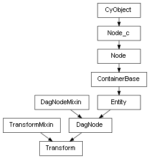

class cymel.core.cyobjects.transform.Transform¶

- class cymel.core.cyobjects.transform.Transform(*args, **kwargs)¶
ベースクラス:
TransformMixin,DagNodetransform ノードタイプラッパークラス。
固定引数無しでのクラスインスタンス生成時のノード生成をサポート。
Methods:
addChild(child[, r, add, avoidJointShear, ...])子ノードを追加する。複数指定可能。
Attributes:
- TYPE_BITS = 3¶
クラスでサポートしているノードの特徴を表す。
Methods Details:
- addChild(child, r=False, add=False, avoidJointShear=False, unmaintainIS=False)¶
子ノードを追加する。複数指定可能。
- パラメータ:
child -- 子にするノードの
DagNodeや名前や、それらのリスト。r (bool) -- 現在のローカル変換を維持するかどうか。 デフォルトではワールド空間で維持される。
add (bool) -- 移動ではなくパスを追加する（インスタンス）。
avoidJointShear (bool) -- 追加する子が joint で、ワールド姿勢の維持のために shear が必要な場合に、その使用を避けるための transform が 追加されるようにする。 これは本来の Maya の挙動だが、このメソッドのデフォルトでは joint の shear を使用することで transform を追加しない。
unmaintainIS (bool) -- このノードが joint の場合に inverseScale 接続・切断の 保守をしない。